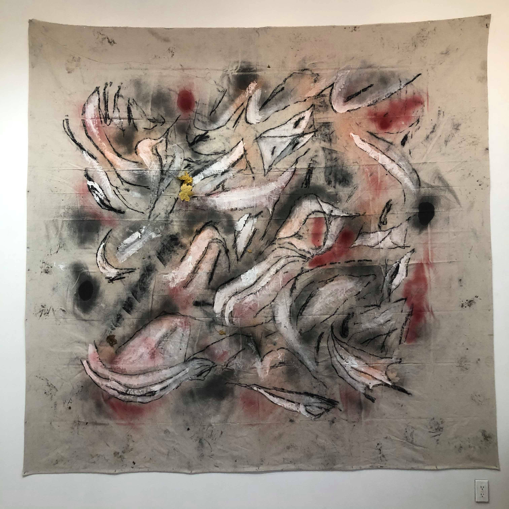

----------------------------------------------------------------- Dean Cercone at Galerie Manque By Adam Aslan
Photo by Adam Aslan
Dean Cercone was making art in Bushwick before most of the galleries in Bushwick were even open. If one of the many galleries currently located in Bushwick were to select an artist representive of a wave of artists that helped establish the neighborhood as the creative mecca it is today that actually still live there, few would find a better choice than Dean Cercone, a founding member of Bushwick venues the Glove and Bohemian Grove.
Bushwick has long been considered a haven for artists, but as rent increases at alarming rates, the number of artists actually living there decreases. While there does seem to be a healthy amount of artist studios in Bushwick, one has to wonder how many of these artists are willing to stand as independently in the art world as Cercone.
While Dean Cercone has an artistic identity that remains independant from traditional art circles, he has shown in a number of galleries and art fairs.
 Photo by Adam Aslan
Here is the press release:
Galerie Manqué presents Memory Silt, an exhibition of large-scale abstract paintings by artist and musician Dean Cercone. The show’s title refers to Cercone’s view of his work as a kind of remnant of both the flow of associations in his mind as he creates it and the material residue of the physical actions taken in applying the material.
Affinities to the low-fi, do-it-yourself aesthetic found in Cercone’s music are echoed in his paintings’ raw and direct execution. Cercone creates the paintings on large pieces of unstretched canvas, laid flat on the floor of his Brooklyn studio or, weather permitting, on the concrete surface behind the studio. Some of his primary materials include house paint, spray enamel, and charcoal created by burning pieces of found wood in a makeshift fire pit outside his studio.
The paintings are usually created while Cercone listens to music—which can span a wide range of styles, from classical to calypso, country to the work of his contemporaries in Brooklyn. The execution is spontaneous, with Cercone attempting to achieve a coherent balance of the dispersal of charcoal, sprayed and brushed paint over the surface of the canvas.
The results—monumental, gestural and with a powerfully memorable “signature” look—strangely suggest the work of a previously unknown artist from the heyday of AbEx. However, Cercone’s employment of abject and contemporary materials (charred found wood, aerosol spray paint) gives the work a gritty, DIY, “street” feel that anchors it firmly in the present.
Cercone’s efforts at creating a satisfyingly balanced, coherent-if-raw visual statement–cobbled together from whatever materials are at hand and found to be effective in serving a desired purpose–could be viewed as having parallels to his generation’s attempts to piece together a life in an era of extreme wealth inequality and rampant downward social mobility.